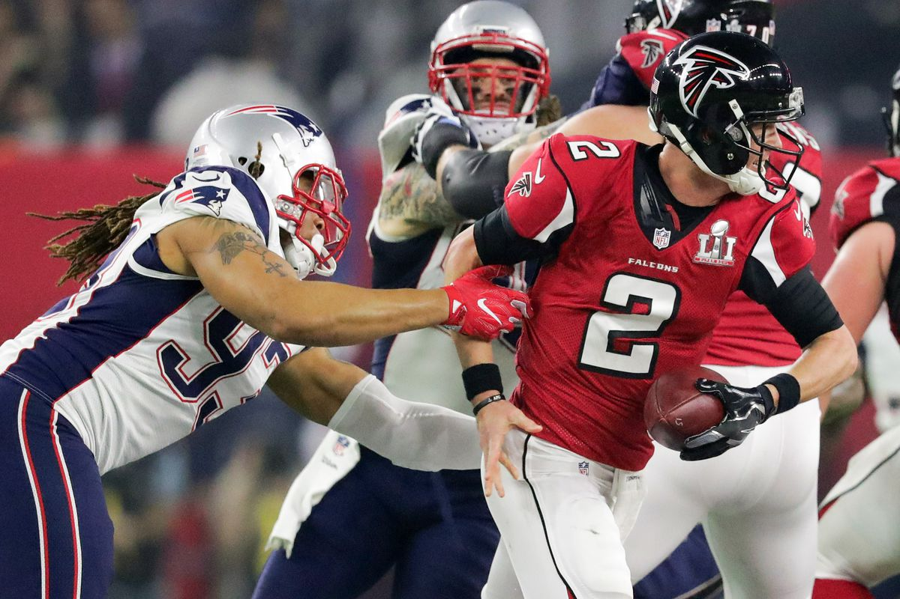
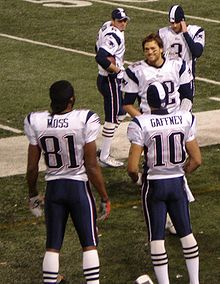
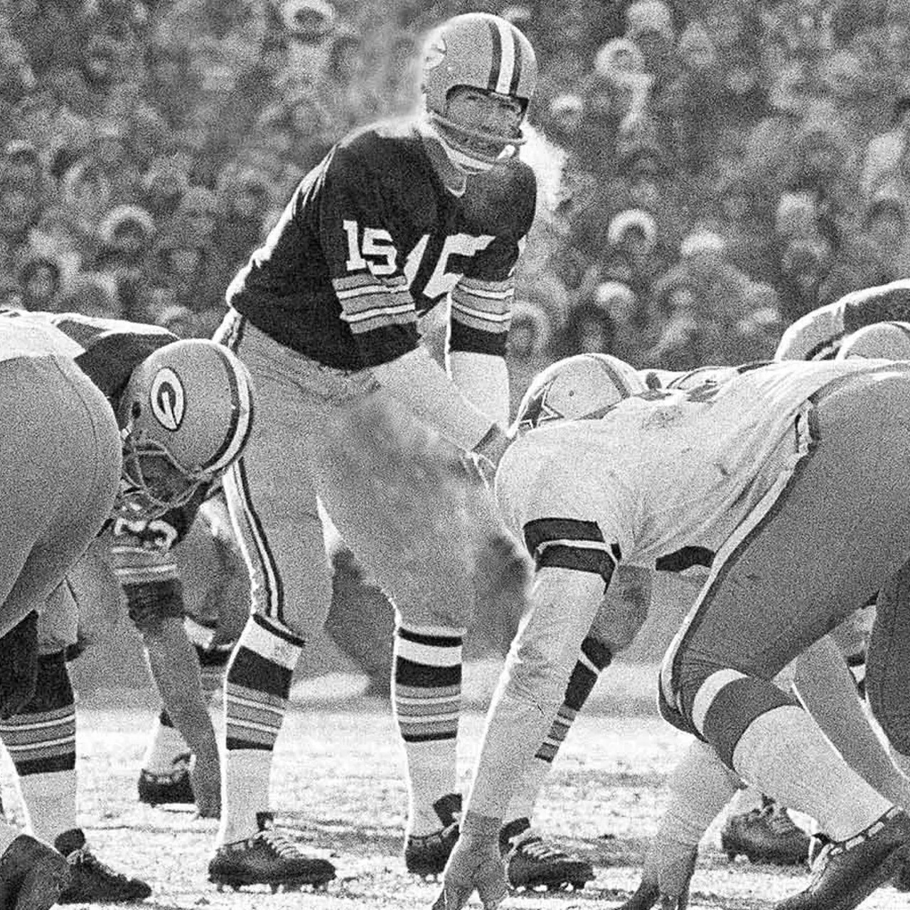
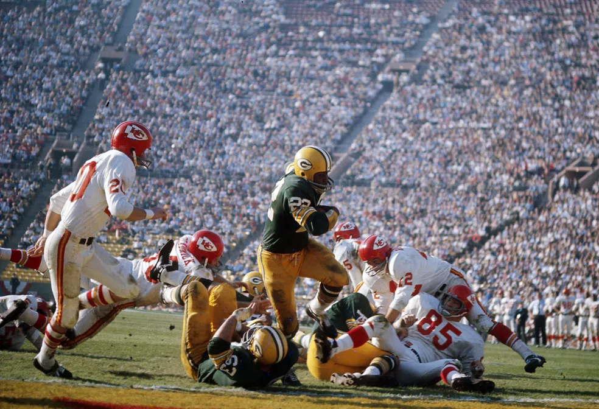
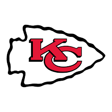
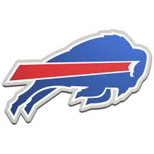
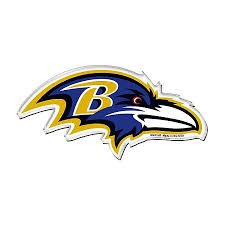
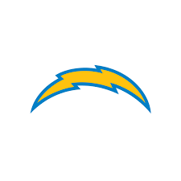
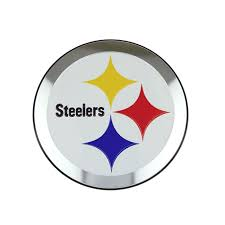
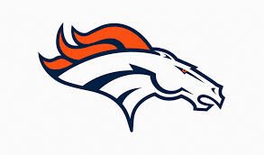

<link rel="stylesheet" href="../css/pages/secao_Curiosidades_Campeonato.css">

<section class="container secao5">
    <div class="col-12 h-100 d-flex flex-column flex-lg-row justify-content-between">
        <div class="div__curiosidades col-12 col-lg-3 d-flex flex-column">
            <h1>Curiosidades</h1>
            <div class="col-12">
                <div class="card">
                    
                    <div class="card-body">
                        <p class="card-text"><small class="text-body-secondary">Super Bowl</small></p>
                        <p class="card-text">A edição do Super Bowl mais assistida na TV americana foi a 51ª, que aconteceu em 5 fevereiro de 2017, transmitida pela Fox. Estima-se que 172 milhões de espectadores viram o New England Patriots vencer o Atlanta Falcons por 34 a 28, além do show do intervalo com Lady Gaga.</p>
                    </div>
                </div>
            </div>
        </div>
        <div class="card__curiosidades col-12 col-lg-3 mx-lg-5 d-flex flex-column align-items-center justify-content-between">
            <div class="card d-flex flex-row card__curiosidade">
                
                <div class="card-body col-4 p-1">
                    <p class="card-text m-0"><small class="text-body-secondary m-0">Maior público</small></p>
                    <p class="card-text m-0">A temporada de 2007 teve o maior público pagante na somas dos jogos, com mais de 22,3 milhões de pessoas.</p>
                </div>
            </div>
            <div class="card d-flex flex-row card__curiosidade">
                
                <div class="card-body col-4 p-1">
                    <p class="card-text m-0"><small class="text-body-secondary m-0">Menor temperatura</small></p>
                    <p class="card-text m-0">O jogo mais frio da história ocorreu em 31/12/1967, em Green Bay. A temperatura foi de menos 25º C.</p>
                </div>
            </div>
            <div class="card d-flex flex-row card__curiosidade">
                
                <div class="card-body col-4 p-1">
                    <p class="card-text m-0"><small class="text-body-secondary m-0">Super Bowl</small></p>
                    <p class="card-text m-0">O primeiro Super Bowl ocorreu em 1967, quando a NFL e a AFL, se uniram para organizar a disputa.</p>
                </div>
            </div>
            <button class="btn btn-dark my-2 align-self-center">Mais <i class="fa-solid fa-arrow-right"></i></button>
        </div>
        <div class="div__curiosidades3 col-12 col-lg-5">
            <h1>Campeonato</h1>
            <table class="table table-bordered text-center">
                <thead class="table-light">
                    <tr>
                        <th>AFC</th>
                        <th>V</th>
                        <th>D</th>
                        <th>E</th>
                        <th>%</th>
                        <th>Casa</th>
                        <th>Fora</th>
                        <th>Seq</th>
                    </tr>
                </thead>
                <tbody>
                    <tr>
                        <td class="team-row">
                            1.  Kansas City Chiefs
                        </td>
                        <td>15</td>
                        <td>1</td>
                        <td>0</td>
                        <td>.938</td>
                        <td>8-0-0</td>
                        <td>7-1-0</td>
                        <td>V6</td>
                    </tr>
                    <tr>
                        <td class="team-row">
                            2.  Buffalo Bills
                        </td>
                        <td>12</td>
                        <td>3</td>
                        <td>0</td>
                        <td>.800</td>
                        <td>7-0-0</td>
                        <td>7-1-0</td>
                        <td>V2</td>
                    </tr>
                    <tr>
                        <td class="team-row">
                            3.  Baltimore Ravens
                        </td>
                        <td>11</td>
                        <td>5</td>
                        <td>0</td>
                        <td>.688</td>
                        <td>5-2-0</td>
                        <td>6-3-0</td>
                        <td>V3</td>
                    </tr>
                    <tr>
                        <td class="team-row">
                            4.  Los Angeles Chargers
                        </td>
                        <td>10</td>
                        <td>6</td>
                        <td>0</td>
                        <td>.625</td>
                        <td>5-3-0</td>
                        <td>3-2-0</td>
                        <td>V2</td>
                    </tr>
                    <tr>
                        <td class="team-row">
                            5.  Pittsburgh Steelers
                        </td>
                        <td>10</td>
                        <td>6</td>
                        <td>0</td>
                        <td>.625</td>
                        <td>5-2-0</td>
                        <td>5-4-0</td>
                        <td>L3</td>
                    </tr>
                    <tr>
                        <td class="team-row">
                            6.  Denver Broncos
                        </td>
                        <td>9</td>
                        <td>7</td>
                        <td>0</td>
                        <td>.563</td>
                        <td>5-2-0</td>
                        <td>4-5-0</td>
                        <td>L2</td>
                    </tr>
                </tbody>
            </table>
        </div>
    </div>
</section>